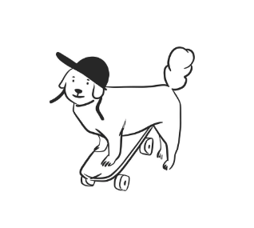

<body>
    <h1>Homepage</h1>

    <!-- anchor element  -->
    <!-- to open link in a new tab or window you can set target to _blank  -->
    <!-- noopener value prevents the opened link from gaining access to the webpage from which it was opened -->
    <a href="https://www.theodinproject.com/about" target="_blank" rel="noopener noreferrer">
        About The Odin Project
    </a><br>
    <a href="./pages/about.html">About</a>

    <!-- using a relative path -->
    
  </body>